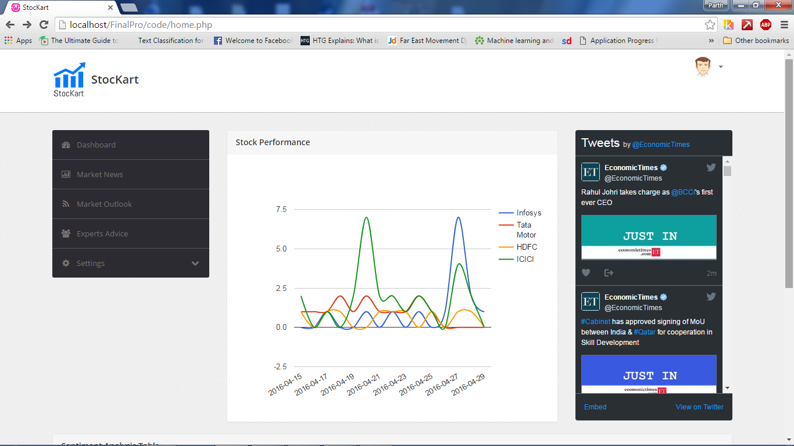
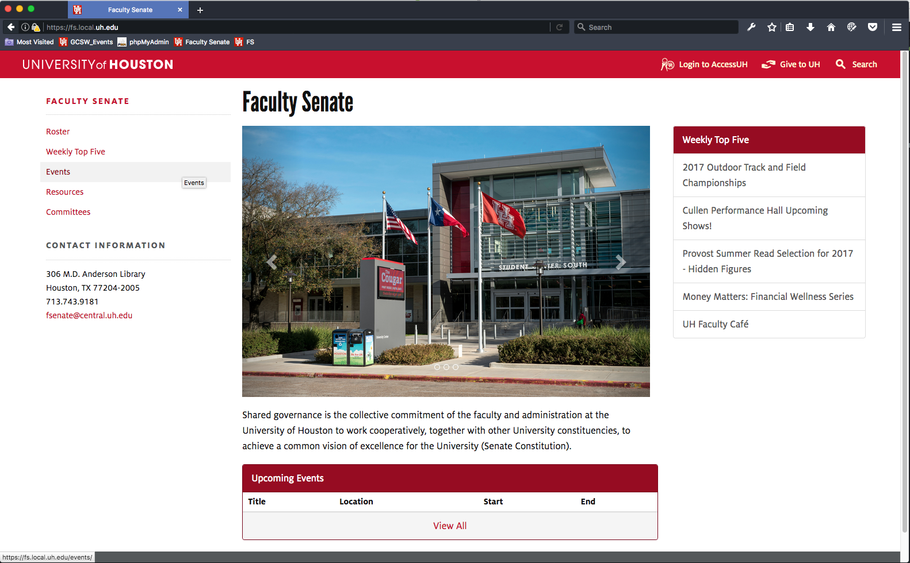

Hi!! I am Manasvi Thakkar.
I am Computer Science Master's student at the University of Houston. Currently working as a full-stack developer at Business Solution's Team at University of Houston.
Introduction
Efficiently unleash cross-media information without cross-media value. Quickly maximize timely deliverables for real-time schemas. Dramatically maintain clicks-and-mortar solutions without functional solutions.

Stock Market Behavior Analysis using Sentiment Analysis and Machine Learning
An application that analyzes the stock market behavior based uopn the user's sentiment regarding particular stocks.

Faculty-Senate Website - University of Houston
A web application to manage the faculty-senate organizational tasks.

Frequent k+ item Mining
A variation of Apriori algorithm that mines frequent k+ data items from a trancation database consisting of 14k transactions.